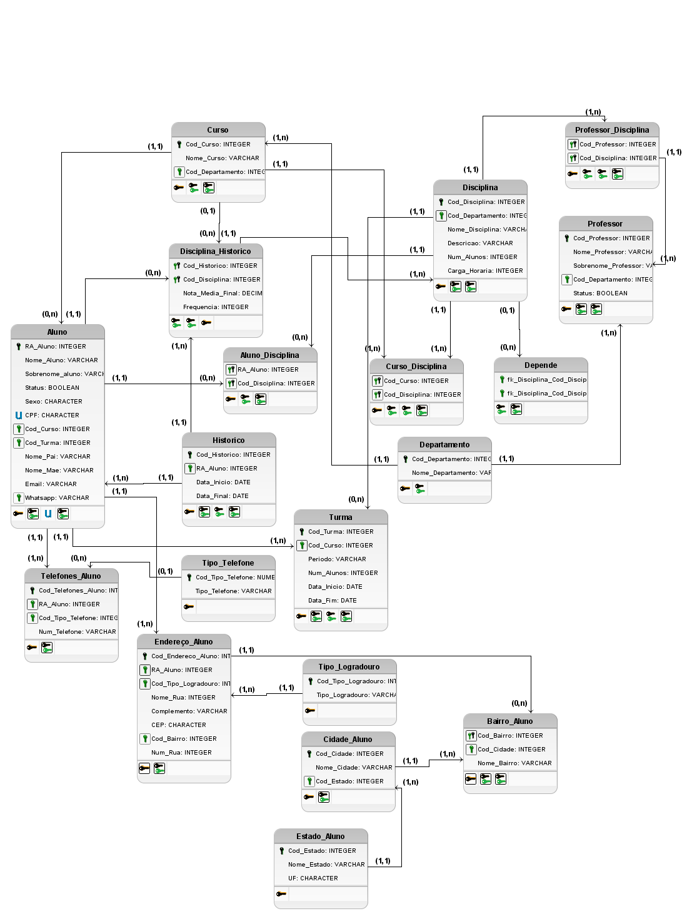

Contexto
Antes de analisar dados, alguém precisa organizá-los. Este projeto, da graduação em Ciência da Computação, mostra essa outra ponta: como estruturar alunos, professores, cursos, disciplinas, turmas e histórico escolar num banco que garanta integridade e responda às perguntas da secretaria acadêmica?
Regras de negócio
Antes de qualquer linha de SQL, mapeei como a faculdade funciona. Algumas das regras:
- Um aluno só pode estar matriculado em um curso por vez e em no máximo 9 disciplinas por semestre.
- Um aluno pode ser reprovado no máximo 3 vezes na mesma disciplina.
- Cada turma comporta no máximo 30 alunos, e cada professor leciona no máximo 4 disciplinas.
- Uma disciplina pode ter pré-requisitos, resolvido com um autorrelacionamento.
Processo
- Modelagem conceitual e lógica no brModelo, com os relacionamentos muitos-para-muitos resolvidos por tabelas associativas (professor e disciplina, curso e disciplina, aluno e disciplina, histórico e disciplina).
- Normalização até a 3ª forma normal, separando telefone, endereço, bairro, cidade e estado do aluno em tabelas próprias.
- Dicionário de dados com tipo, tamanho, restrição e descrição de cada atributo.
- Script físico em MySQL 8 que recria o banco do zero com
DROP DATABASE IF EXISTS, cria as tabelas na ordem das chaves estrangeiras, insere dados de teste e roda as consultas.

Resultado
As consultas cruzam alunos, cursos e turmas com JOIN, por exemplo para listar cada aluno com o curso e o período da turma.
Limitações
Algumas regras, como o limite de 9 disciplinas por semestre e de 3 reprovações, não cabem num CHECK e precisariam de triggers ou de validação na aplicação. Esse é o próximo passo, junto com uma carga de dados de teste maior e novas consultas para relatórios, como a média geral de cada aluno.